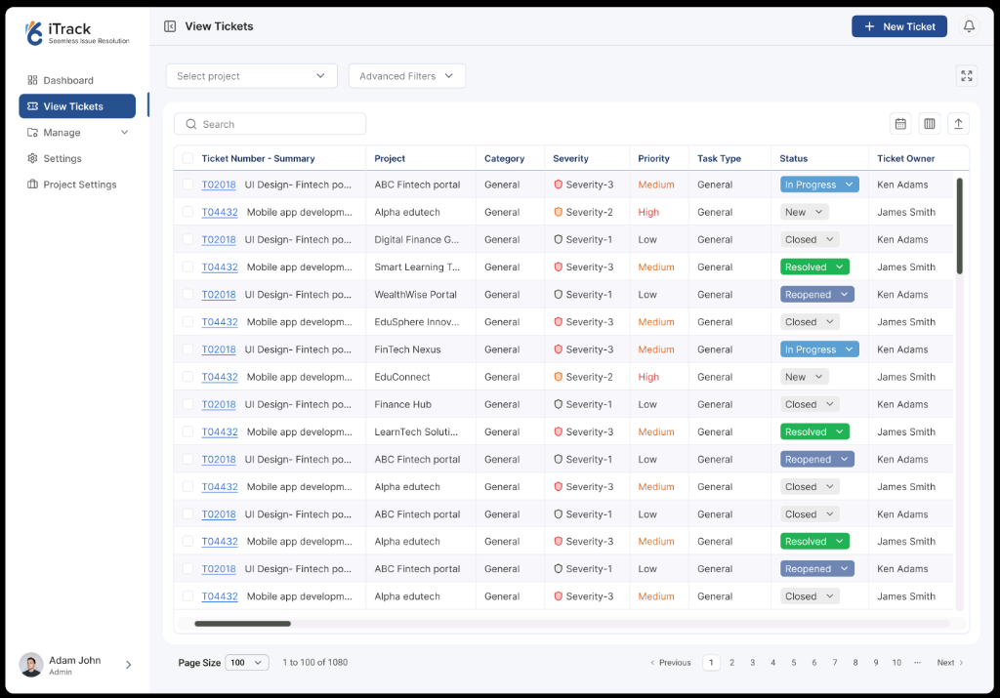
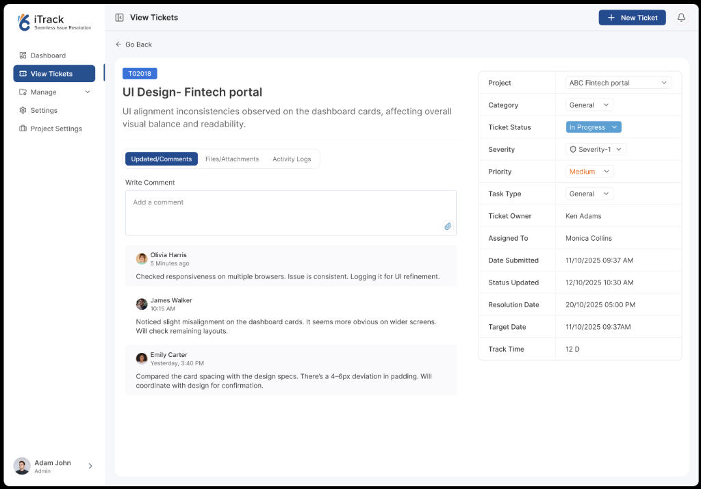
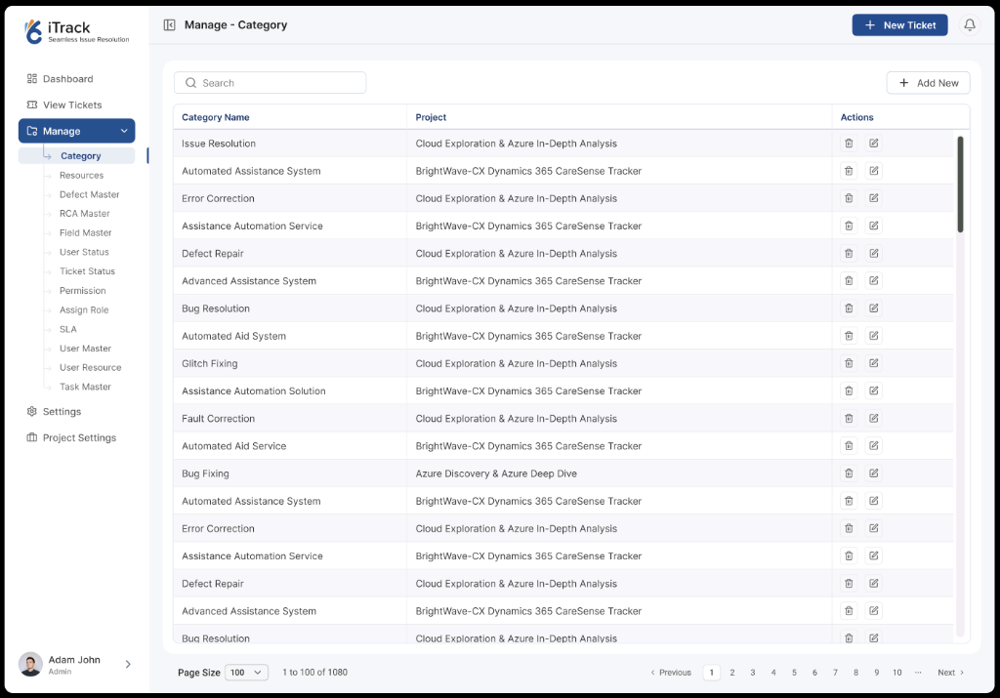
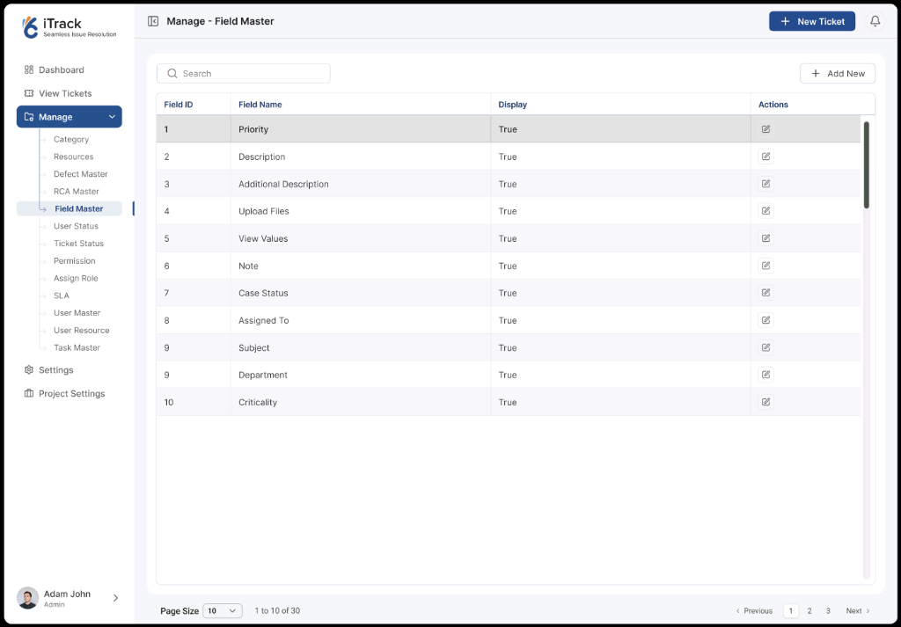

Designing an intelligent issue resolution & multi-tenant SLA governance system


REAL-TIME SLA TELEMETRY · LIVE DEPLOYMENT
Enterprise software organizations handling multiple customer cloud contracts frequently struggle with fragmented issue resolution. Engineers waste hours sifting through duplicate tickets, support leads struggle to prioritize critical blockers, and executive leadership lacks real-time visibility into contract-bound SLA compliance.
iTrack was designed as an end-to-end enterprise issue resolution platform spanning predictive AI triage at the point of ingestion, high-density resolution grids for cross-functional engineering teams, and real-time SLA telemetry for operations leadership.
Legacy ticketing systems forced engineers through 50-field static forms, leading to rushed submissions, misclassified severities, and rampant duplicate filings. When an issue breached an SLA threshold, managers only found out after customer escalation.
In high-throughput engineering workflows, every duplicate ticket wastes 2.5 hours of triage time. iTrack turns triage from a reactive chore into an intelligent, pre-ingestion recommendation loop.
Providing engineering leadership and operational directors with instantaneous visibility across active backlogs, contract SLA risks, and discipline distributions.
Scannable metric tiles tracking Overdue (355), Due Today (12), Open Tickets (352), and Unassigned items with day-over-day velocity indicators.
Color-coded bar chart telemetry contrasting Active SLAs vs. Breached SLAs (355) vs. Resolved Breached (20) to pinpoint systemic bottleneck phases.
Multi-slice severity ratio separating Severity-1 (234 critical), Severity-2 (40 medium), and Severity-3 (78 standard) for immediate capacity allocation.
Stopping duplicate tickets at the point of creation through real-time ML similarity scanning, automated root cause prediction, and 1-click field autofill.
As the submitter types the title and description, the right-hand recommendation engine surfaces existing open or resolved bugs with matching percentage scores.
"Apply Fields" extracts validated component metadata, defect phase, and severity classifications directly into the form, accelerating entry.
Enables submitters to link their issue to existing parent incidents with one click, preserving single-source-of-truth investigation threads.
Engineered for support leads and engineers managing 1,000+ active workstreams with inline state modifiers, multi-project filters, and severity coding.

Status chips double as interactive dropdowns—allowing engineers to transition issues (In Progress, Resolved, Reopened) without leaving the list view.
Red shield icons designate Severity-1 blockers requiring immediate attention, while amber and neutral shields distinguish medium and low priorities.
Instant filtering across disparate enterprise client portals (ABC Fintech, Alpha Edutech, Smart Learning) with saved multi-dimensional views.
Decoupling engineering conversation from strict SLA compliance timestamps, role assignments, and lifecycle milestone tracking.

Tabbed timeline separating developer discussions (Comments), file attachments/screenshots, and immutable system audit logs.
Right-hand governance rail displaying exact submission dates, target resolution deadlines, and running Track Time metrics (12 D).
Maintains clear accountability by distinguishing between original ticket owner (Ken Adams) and the currently assigned resolving engineer (Monica Collins).
Providing system administrators with deep multi-tier master data control across categories, defect hierarchies, RCA models, and dynamic field visibility.


Nested sidebar structuring 12 distinct master entities—including Defect Master, RCA Master, User Master, and SLA configurations.
Enables project managers to toggle form field display rules per client contract without requiring engineering code deployments.
Strict authorization controls ensuring only certified administrators can edit core defect taxonomies and contractual SLA parameters.
Surface historical resolutions and duplicate detection in the creation viewport, cutting redundant backlog clutter at the source.
Utilize clean typographic hierarchy, micro-status chips, and progressive disclosure drawers to keep 10+ columns scannable in high-volume environments.
Maintain an uninterrupted conversational timeline for engineers while isolating SLA compliance timestamps, assignees, and target dates in a dedicated side panel.